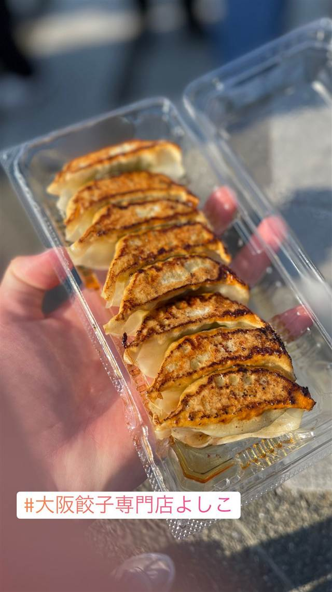

町中華 · 餃子専門 · 駒沢公園
大阪餃子専門店よしこ（クラフト餃子フェス TOKYO 2022 出店）
鶴橋の食堂を営んだ母の味を再現した、国産野菜の一口餃子
大阪餃子専門店よしこ
焼肉「ふたご」を営む兄弟が、大阪・鶴橋で小さな食堂を営んでいた実母「よしこ」さんの餃子を再現して2021年に立ち上げた一口餃子専門店。国産野菜を使った小ぶり薄皮の餃子が持ち味で、クラフト餃子フェスにも出店している。
TRIVIA
豆知識
- 店名「よしこ」は創業者兄弟の実母の名前に由来する
- オープン日の2月3日は母・よしこさんの誕生日に合わせて選ばれた
| 創業 | 本店（五反田）は2021年2月3日開業。運営は焼肉「ふたご」も手がける株式会社FTG Company。 |
|---|---|
| 看板 | 国産野菜を使った小ぶり・薄皮の大阪風一口餃子 |
| こだわり | 大阪の家庭料理の味を再現した小ぶりで薄皮の餃子。具材には国産野菜を100%使用する。 |
| どこから | 23区の外れ・近郊 |
| 場所 | 駒沢大学駅 東京都世田谷区駒沢公園1-1（駒沢オリンピック公園 中央広場） |
| メモ | 五反田本店のほか都内に複数店舗を展開。今回はイベント「クラフト餃子フェス TOKYO 2022」（駒沢オリンピック公園）への出店。 |
食べたもの：餃子(フェス)
NEARBY
近い店・同じ系統の店
-
 餃子専門 亀戸駅
亀戸餃子 本店
座ると自動で2皿確定、1955年創業の下町餃子専門店
昼 ～¥999 夜 ～¥999
餃子専門 亀戸駅
亀戸餃子 本店
座ると自動で2皿確定、1955年創業の下町餃子専門店
昼 ～¥999 夜 ～¥999
-
 餃子専門 幡ヶ谷
您好（ニイハオ）
ひき肉でなく粗く刻んだ肉を使う、連続ビブグルマンの餃子
昼 ¥2,000～¥2,999 夜 ¥2,000～¥2,999
餃子専門 幡ヶ谷
您好（ニイハオ）
ひき肉でなく粗く刻んだ肉を使う、連続ビブグルマンの餃子
昼 ¥2,000～¥2,999 夜 ¥2,000～¥2,999
-
 餃子専門 乃木坂
赤坂珉珉（みんみん）
酢コショウで食べる元祖、渋谷の名店直系ののれん分け店
夜 ¥4,000～¥4,999
餃子専門 乃木坂
赤坂珉珉（みんみん）
酢コショウで食べる元祖、渋谷の名店直系ののれん分け店
夜 ¥4,000～¥4,999
-
 餃子専門 銀座一丁目
銀座天龍 本店
ニンニクを使わず白菜と豚肉だけで作る12cmの大判餃子を創業以来守る
昼 ¥1,000～¥1,999 夜 ¥3,000～¥3,999
餃子専門 銀座一丁目
銀座天龍 本店
ニンニクを使わず白菜と豚肉だけで作る12cmの大判餃子を創業以来守る
昼 ¥1,000～¥1,999 夜 ¥3,000～¥3,999
-
 餃子専門 飯田橋駅
餃子の店 おけ以
東京に焼き餃子を広めた老舗、羽根つき餃子は1日1300個
昼 ¥1,000～¥1,999 夜 ¥1,000～¥1,999
餃子専門 飯田橋駅
餃子の店 おけ以
東京に焼き餃子を広めた老舗、羽根つき餃子は1日1300個
昼 ¥1,000～¥1,999 夜 ¥1,000～¥1,999
-
 餃子専門 恵比寿駅
えびすの安兵衛
高知の屋台仕込み、にんにくの効いたジューシーな餃子
夜 ¥1,000～¥1,999
餃子専門 恵比寿駅
えびすの安兵衛
高知の屋台仕込み、にんにくの効いたジューシーな餃子
夜 ¥1,000～¥1,999